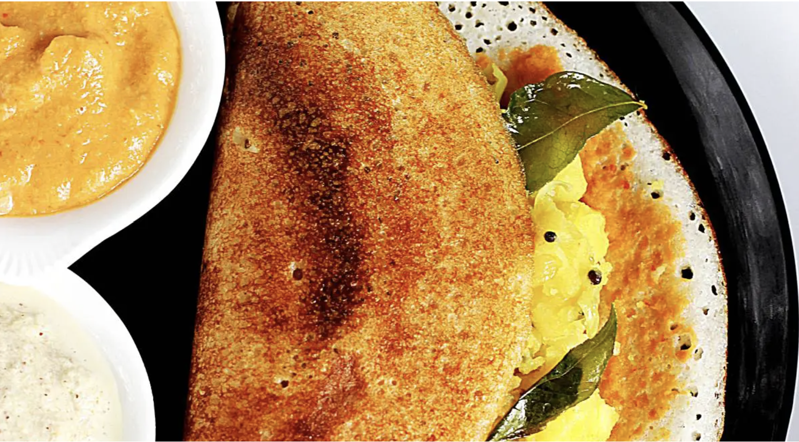

Go back
Masala Dosa

Description
This classic Masala dosa recipe makes perfectly light, soft and crispy crepes stuffed with a savory, wonderfully
spiced potato and onion filling.
It might take a bit of time to make delicious hotel style masala dosa, but with my step-by-step instructions and
photos I promise it will be easier than you think and is so worth the effort!
Ingredients
- 1.5 cups idli rice or parboiled rice in one bowl. You can also use regular short-grained to medium-grained
rice like sona masuri or parmal
- ½ cup urad dal (husked black gram) + 1 tablespoon chana dal (husked and split bengal gram) + 20 methi seeds
(fenugreek seeds) in a second bowl
- ⅓ cup thick poha (flattened rice) in a third bowl.